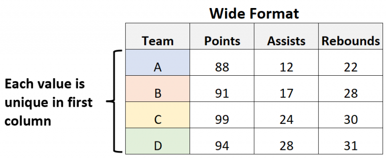
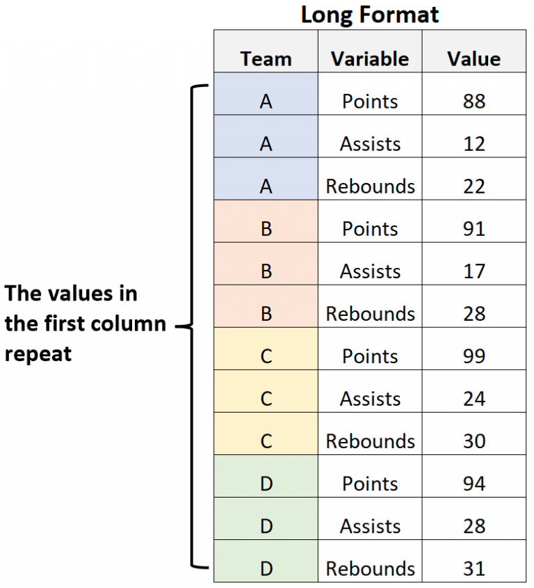

Day 4 - Reshaping Data
1 Basics of Data Structure

Images are from: https://www.statology.org/long-vs-wide-data/
2 Converting between Data Structures
df_wq_nutr <- df_wq %>%
select(Station, Date, DissAmmonia, DissNitrateNitrite, DissOrthophos)
df_wq_nutr# A tibble: 62 × 5
Station Date DissAmmonia DissNitrateNitrite DissOrthophos
<chr> <date> <dbl> <dbl> <dbl>
1 P8 2020-01-16 0.15 2.8 0.2
2 D7 2020-01-22 0.21 0.49 0.071
3 P8 2020-02-14 0.25 1.7 0.13
4 D7 2020-02-20 0.14 0.48 0.065
5 P8 2020-03-03 0.11 1.6 0.14
6 D7 2020-03-06 0.22 0.38 0.082
7 P8 2020-06-11 0.05 1.07 0.177
8 D7 2020-06-17 0.05 0.4 0.095
9 P8 2020-07-13 0.05 0.71 0.171
10 D7 2020-07-16 0.05 0.32 0.093
# ℹ 52 more rows2.1 “Wide” to “Long”
df_wq_nutr_long <- df_wq_nutr %>%
pivot_longer(
cols = c(DissAmmonia, DissNitrateNitrite, DissOrthophos),
names_to = "Parameter",
values_to = "Value"
)
print(df_wq_nutr_long, n = 30)# A tibble: 186 × 4
Station Date Parameter Value
<chr> <date> <chr> <dbl>
1 P8 2020-01-16 DissAmmonia 0.15
2 P8 2020-01-16 DissNitrateNitrite 2.8
3 P8 2020-01-16 DissOrthophos 0.2
4 D7 2020-01-22 DissAmmonia 0.21
5 D7 2020-01-22 DissNitrateNitrite 0.49
6 D7 2020-01-22 DissOrthophos 0.071
7 P8 2020-02-14 DissAmmonia 0.25
8 P8 2020-02-14 DissNitrateNitrite 1.7
9 P8 2020-02-14 DissOrthophos 0.13
10 D7 2020-02-20 DissAmmonia 0.14
11 D7 2020-02-20 DissNitrateNitrite 0.48
12 D7 2020-02-20 DissOrthophos 0.065
13 P8 2020-03-03 DissAmmonia 0.11
14 P8 2020-03-03 DissNitrateNitrite 1.6
15 P8 2020-03-03 DissOrthophos 0.14
16 D7 2020-03-06 DissAmmonia 0.22
17 D7 2020-03-06 DissNitrateNitrite 0.38
18 D7 2020-03-06 DissOrthophos 0.082
19 P8 2020-06-11 DissAmmonia 0.05
20 P8 2020-06-11 DissNitrateNitrite 1.07
21 P8 2020-06-11 DissOrthophos 0.177
22 D7 2020-06-17 DissAmmonia 0.05
23 D7 2020-06-17 DissNitrateNitrite 0.4
24 D7 2020-06-17 DissOrthophos 0.095
25 P8 2020-07-13 DissAmmonia 0.05
26 P8 2020-07-13 DissNitrateNitrite 0.71
27 P8 2020-07-13 DissOrthophos 0.171
28 D7 2020-07-16 DissAmmonia 0.05
29 D7 2020-07-16 DissNitrateNitrite 0.32
30 D7 2020-07-16 DissOrthophos 0.093
# ℹ 156 more rows2.2 “Long” to “Wide”
df_wq_nutr_wide <- df_wq_nutr_long %>%
pivot_wider(names_from = Parameter, values_from = Value)
df_wq_nutr_wide# A tibble: 62 × 5
Station Date DissAmmonia DissNitrateNitrite DissOrthophos
<chr> <date> <dbl> <dbl> <dbl>
1 P8 2020-01-16 0.15 2.8 0.2
2 D7 2020-01-22 0.21 0.49 0.071
3 P8 2020-02-14 0.25 1.7 0.13
4 D7 2020-02-20 0.14 0.48 0.065
5 P8 2020-03-03 0.11 1.6 0.14
6 D7 2020-03-06 0.22 0.38 0.082
7 P8 2020-06-11 0.05 1.07 0.177
8 D7 2020-06-17 0.05 0.4 0.095
9 P8 2020-07-13 0.05 0.71 0.171
10 D7 2020-07-16 0.05 0.32 0.093
# ℹ 52 more rows2.3 Exercise
3 Summarize and Reshape
df_wq %>%
mutate(Month = month(Date, label = TRUE)) %>%
summarize(Chla = mean(Chla), .by = c(Station, Month)) %>%
pivot_wider(names_from = Station, values_from = Chla)# A tibble: 12 × 3
Month P8 D7
<ord> <dbl> <dbl>
1 Jan 0.605 0.67
2 Feb 1.17 2.90
3 Mar 1.61 4.04
4 Jun 4.47 4.44
5 Jul 5.31 3.94
6 Aug 8.73 3.30
7 Sep 4.1 1.89
8 Oct 2.42 1.96
9 Nov 1.63 1.49
10 Apr 3.08 2.90
11 May 3.7 2.3
12 Dec 1.27 1.693.1 Exercise
Do the same summarize and reshape as above but calculate annual maximums of TDS for each station
df_wq %>%
mutate(Year = year(Date)) %>%
summarize(TDS = max(TDS), .by = c(Station, Year)) %>%
pivot_wider(names_from = Station, values_from = TDS)# A tibble: 3 × 3
Year P8 D7
<dbl> <dbl> <dbl>
1 2020 380 14400
2 2021 578 15800
3 2022 453 13700